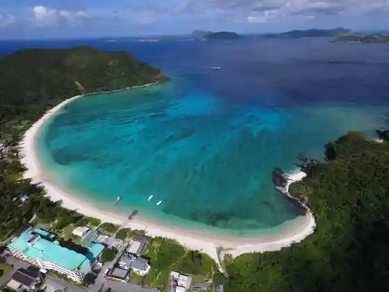
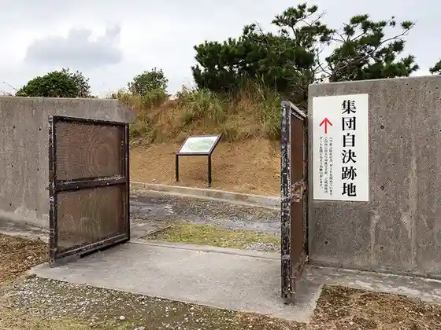

Aharen Beach
Tokashiki, Okinawa · 098-987-2333 · Official / source link
Watari Yoshiyuki Kyu Beach
Tokashiki, Okinawa · 098-987-2333 · Official / source link

Shudan Jiketsu Atochi
Tokashiki, Okinawa · 098-987-2306 · Official / source link

Tokashiki Shima
Tokashiki, Okinawa · Official / source link
Tokashiki Shima Torekkingu
Tokashiki, Okinawa · Official / source link
Tokashiki Ritsu Folk History Museum
Tokashiki, Okinawa · 098-987-2120 · Official / source link
Tokashiki Shima Daibingusabisu Rirakkusuai Land
Tokashiki, Okinawa · 090-7986-6124 · Official / source link
Tokashiki Shima Hoeruotchingu
Tokashiki, Okinawa · Official / source link
Tokashiki Seishonen Ryoko Village
Tokashiki, Okinawa · 098-987-2323 · Official / source link
Niigaki Shoten
Tokashiki, Okinawa · 098-987-2347 · Official / source link
Shu no Ga Ringu
Tokashiki, Okinawa · Official / source link
Aharen Enchi
Tokashiki, Okinawa · Official / source link
Nishi Lookout
Tokashiki, Okinawa · Official / source link
Chippuchippu
Tokashiki, Okinawa · 098-987-2652 · Official / source link
Hanare Shima
Tokashiki, Okinawa · Official / source link
Ken Hana Hara Promenade
Tokashiki, Okinawa · Official / source link
National Okinawa Seishonen Koryu no Ie Campground (Kaiyoken Osamu Ba)
Tokashiki, Okinawa · 098-987-2306 · Official / source link
Riifuin Kuniyoshi & Uotakizzu
Tokashiki, Okinawa · 098-987-2206 · Official / source link
SUP (Sutandoappupadorubodo)
Tokashiki, Okinawa · Official / source link
Marin Club Kanaroa
Tokashiki, Okinawa · 070-3803-2071 · Official / source link
Tsuri
Tokashiki, Okinawa · Official / source link
Daibingu
Tokashiki, Okinawa · Official / source link
Shiikayakku
Tokashiki, Okinawa · Official / source link